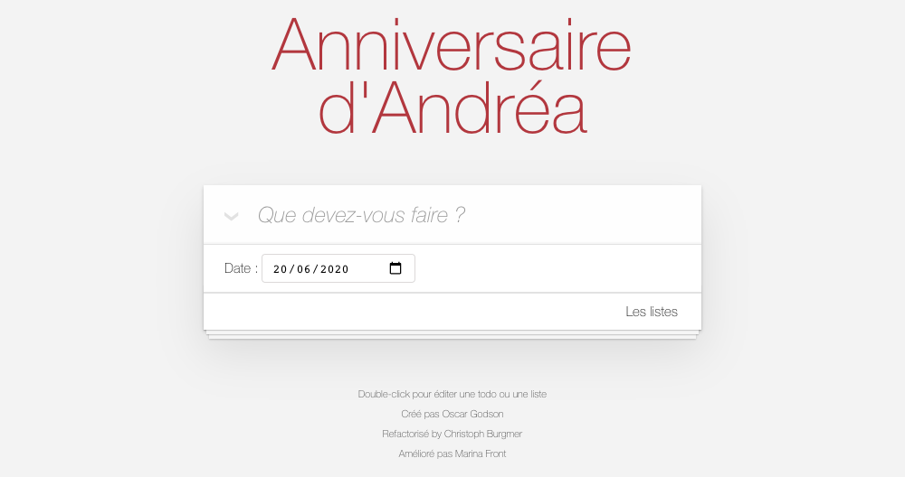
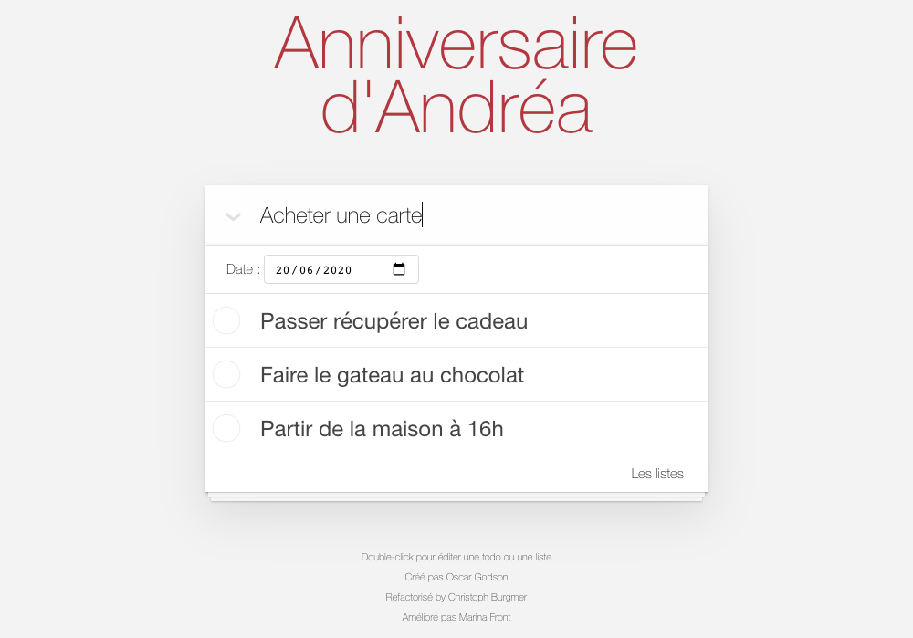
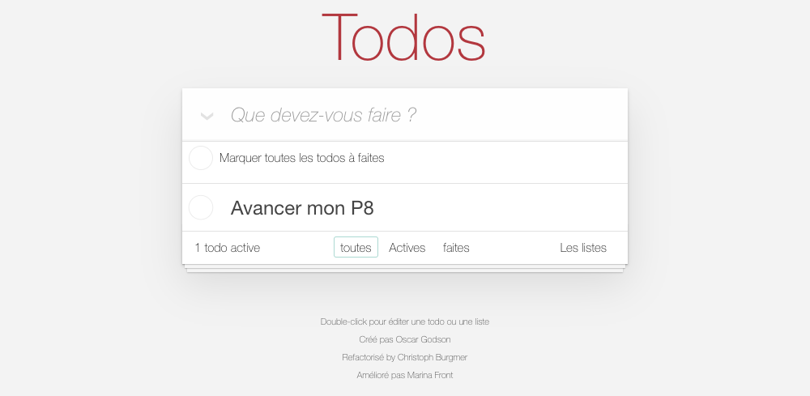

Documentation fonctionnelle
Cette application de todolist offre plusieurs fonctionnalités qui simplifira votre quotidien.
- Ajouter des tâches
- Ajouter des tâches
- Ajouter des tâches
- Filtrer les tâches selon leur état
1. Ajouter des tâches
Nous pouvons apercevoir le champ de saisie dans lequel il est indiqué 'Que devez-vous faire ?', puis un second champ (dans notre exemple) d'une tâche ajoutée nommée 'Ranger le dressing'.

Pour ajouter une tâche, cliquez dans le champ de saisie puis nommez votre tâche (ici 'Doner à manger au chat de la voisine').Pressez ensuite la touche entrée pour ajouter la tâche à la liste.
2. Modifier une tâche

Double-cliquez sur la tâche à modifier. Un encadré gris s'affiche alors, vous pouvez modifier le titre de votre tâche.
3. Compléter des tâches

Vous pouvez cliquer sur le cercle à gauche de la tâche, ce qui fera apparaître une coche verte et grisera le titre de la tâche. De cette manière, vous changerez l'état de la tâche (ce sur quoi nous reviendrons en dernière partie de cette documentation).

Vous pouvez aussi cocher toutes les tâches en même temps en cochant le cercle au dessus de toutes les tâches où il est écrit 'Marquer toutes les todos à faites'
4. Supprimer une tâche

Lors du passage du curseur sur la tâche en question, une croix rouge s'affiche sur la droite. En cliquant dessus, la tâche sera supprimée automatiquement. Vous pouvez aussi cliquer sur le bouton 'Supprimer les faites' en bas à droite, ce qui aura pour effet de supprimer toutes les tâches cochées, ici : 'Donner à manger au chat de la voisine'.
5. Filtrer les tâches
Comme vous pouvez le voir ci-dessus, vous avez la possibilité d'utiliser les filtres correspondants aux états des différentes tâches. Ici, l'option 'toutes' dans le footer est entourée. Cela affiche donc, toutes les tâches, quel que soit leur état.
Chaque tâche possède deux états : 'Active' ou 'Completed'
5.1. Les tâches 'active'

L'état premier d'une tâche est par défaut 'Actives'. Cliquez sur 'Actives' pour afficher les tâches actives
5.1. Les tâches 'completed'

Le deuxième état ('completed') correspond aux tâches qui sont terminées. Cliquez sur 'Faites' pour afficher les tâches faites